Mudflow Part 2 - Mudflow Parameters and Hydrograph
Contents
Mudflow Part 2 - Mudflow Parameters and Hydrograph#
Overview
In this tutorial, create a watershed model to estimate the runoff for a mudflow condition. Part I will set up the watershed rainfall runoff model. Part II will apply mudflow parameters to the watershed hydrograph.
Required Data
The required data is in Module 5 Part II Mudflow folder. This is a new project. Please save and close the previous QGIS.
File |
Content |
|---|---|
*.qgz |
QGIS data files |
*.gpkg |
FLO-2D Geopackage |
*.xlsx |
Cv Calculator |
*.DAT |
Mudflow parameters |
Mudflow guidelines and USGS sample report |
|
*.shp |
Mudflow volume polygon |
Citation List for this Tutorial:
O’Brien, J.S., (2020). Simulating Mudflow Guidelines. FLO-2D Software, Inc., Nutrioso, Arizona.
Step 1: Load the project#
Start with the project from Module 5 Part II. This is the completed watershed project.
If necessary, load it into QGIS. Open QGIS and drag the Watershed Module 5.qgz file into the project.
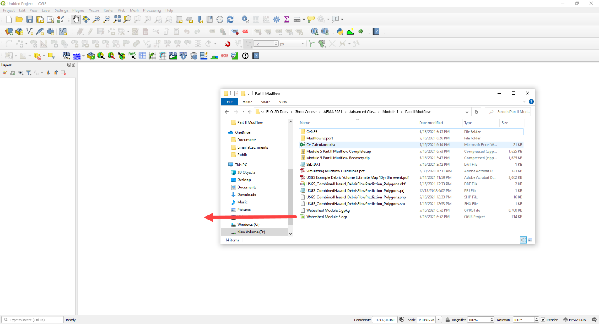
Click Yes to load the model. If the specific window below does not appear, delete the *.gpkg in Module 5 Part I and try again. Don’t forget to make a recovery file first. The data needs to come from Part II but the original GeoPackage was developed in Part I.
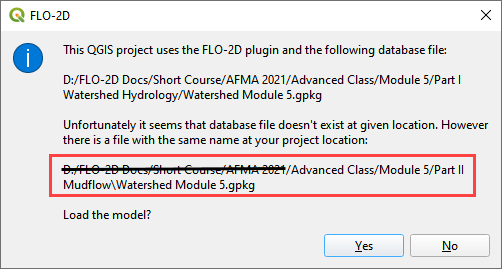
Note
If the project does not look like the following image, you might be using the watershed model.
Close QGIS
Delete the *.qgz and *.gpkg in Part I and Part II folder.
Extract the Module 5 Mudflow Part II Recovery.zip
Reload the project.
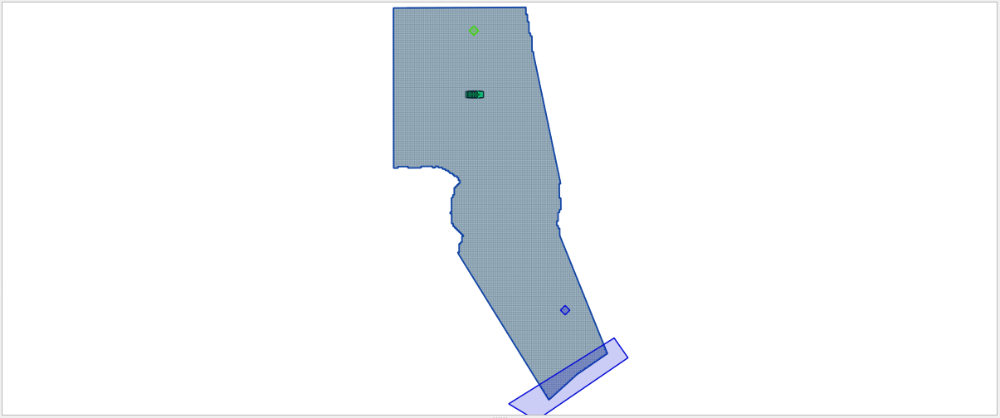
Step 2. Create inflow hydrograph#
Open the HYDROG Program.
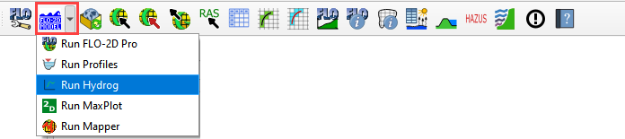
Find the Watershed Export Project and click ok.
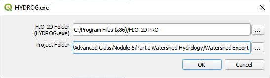
Click the Plot Cross Section hydrographs button.
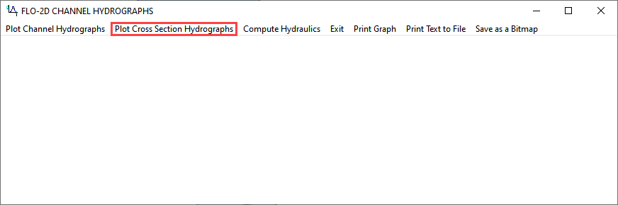
Select cross section 1 and click OK.
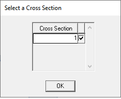
Click the Return to Menu button.
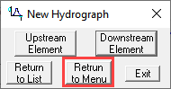
Click the Print Text to File button. This creates a file named “1”. Click ok to close the message. Close HYDROG
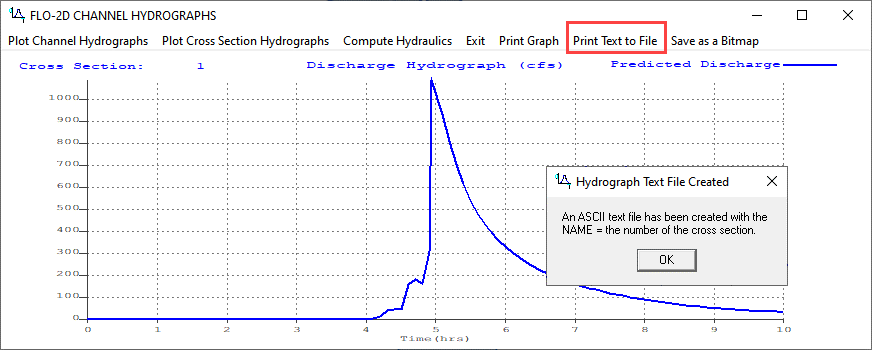
Load the file named “1” into NotePad++ or Excel.
Trim data so that it has 2 tab-delimited columns.
Ctrl-A will select all. Ctrl-C will copy.
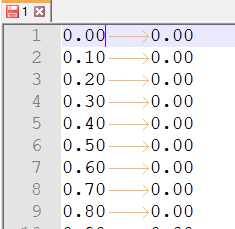
Step 3. Assign the hydrograph to a BC node#
In QGIS, collapse the FLO-2D Widgets and click the Boundary Condition Editor widget.
If the Table Editor is blank, click Add Time Series button.
Name the Time Series 10yr 3hr NoMud.
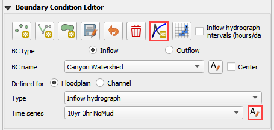
Add the hydrograph from the clipboard into the Table widget.
Click the first cell and click Paste.
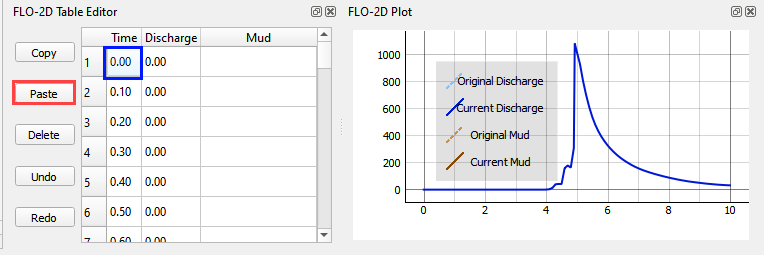
Go back to the widget and click the Schematize button.
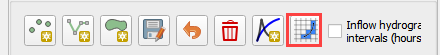
Step 4. Set a global bulking factor#
Note
The global sediment concentration uniformly bulks the inflow water discharge hydrograph (inflow volume). Bulking factor BF = 1./(1.- Cv).
This initial method is a simple way to estimate the bulking due to normal sediment entrainment in an alluvial rainfall event.
Click the Control Variables table.
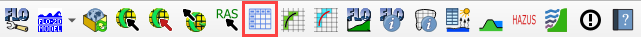
Add a Bulking Concentration, set Mud switch to None, and click Save.
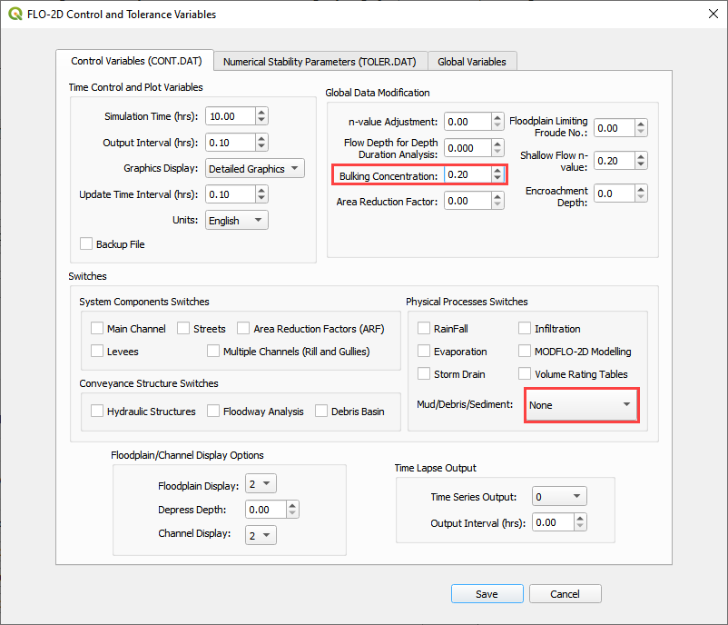
Step 5. Export and run the model#
Export the FLO-2D Data files. Click OK.

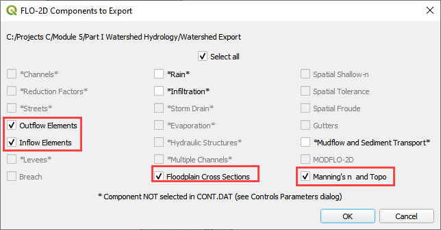
Select the Module 5\Part II Mudflow\Bulking Factor Export.
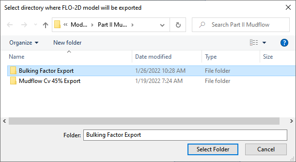
The data is ready to run.
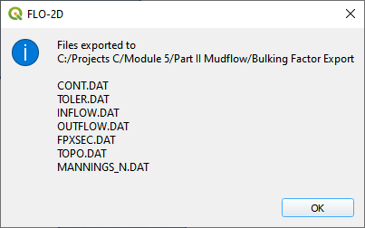
Set the Paths and Run the model.
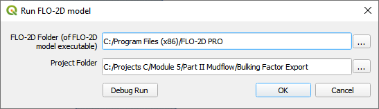
Step 6. Setup the Mudflow Parameters#
Note
The mudflow model is different from the Bulking Factor model. It requires mudflow parameters for SED.DAT and INFLOW.DAT.
Mudflow data is saved to the SED.DAT file. Use the following images to set it up in QGIS.
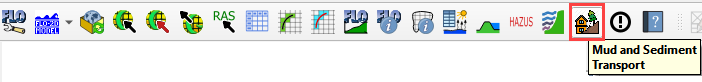
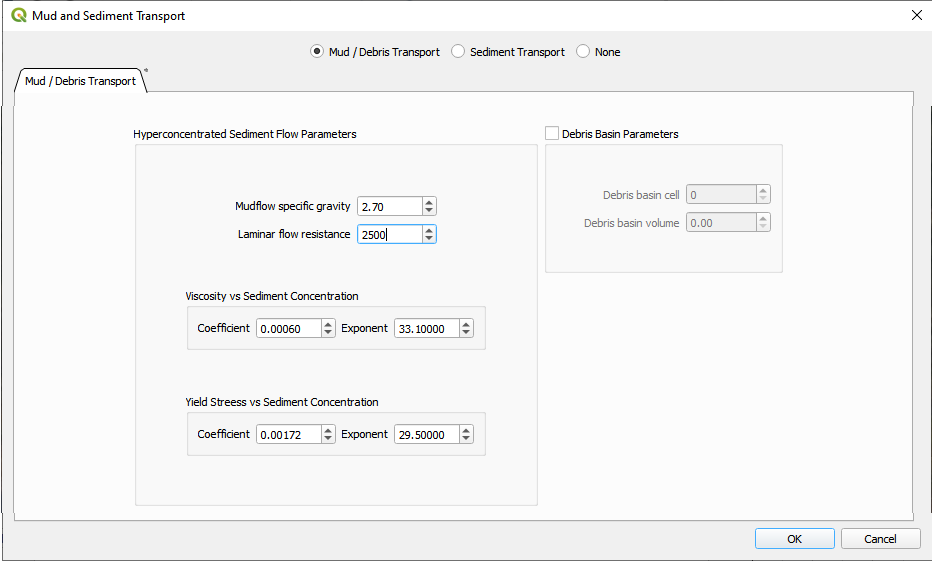
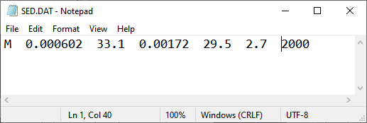
Note
See Simulating Mudflow Guidelines to get instructions for the soil viscosity and yield stress parameters. The mudflow viscosity and yield stress (coefficient and exponent regression) parameters are generated from a laboratory viscometer analysis. Commercial viscometers are available for this purpose (see AMETEK Brookfield viscometers). If no laboratory data is available, the Glenwood #4 sample data in the Mudflow Guidelines represents a field mudflow similar to wet cement.
Step 7. Set up the mudflow hydrograph#
Open the Cv Calculator.xlsx file.
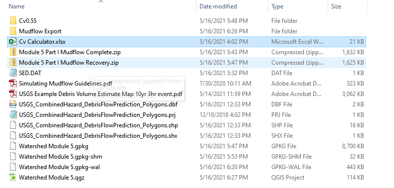
Copy the first 3 columns into the clipboard.
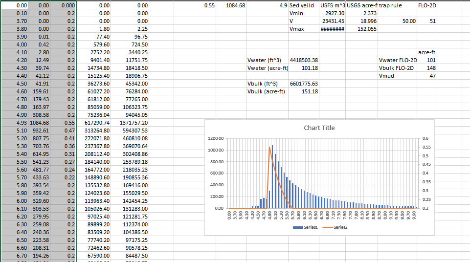
Click the Boundary Condition Editor.
Click Add a Time series button.
Name the new time series.
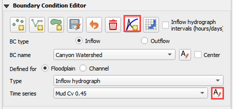
Paste the data from Excel into the Table Editor widget.
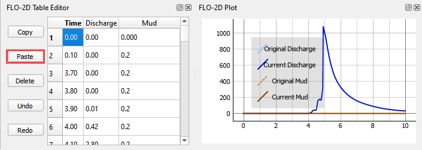
Go back to the BC widget and click the Schematize button.
Step 8. Export and run the Mudflow model#
Click the Control Variables table.
Set the Bulking Concentration to 0.00, set Mud switch to Mud/Debris, and click Save.
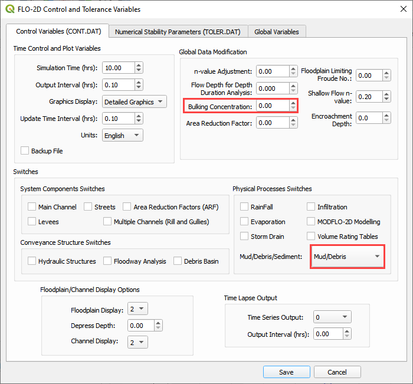
Export the FLO-2D Data files. Click OK.
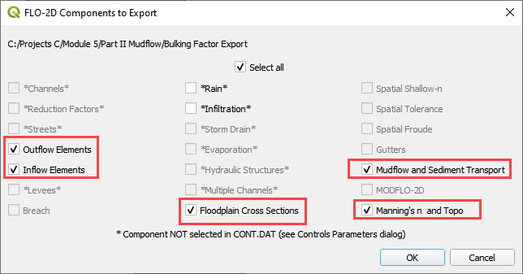
Select the Module 5\Part II Mudflow\Cv0.55 folder.
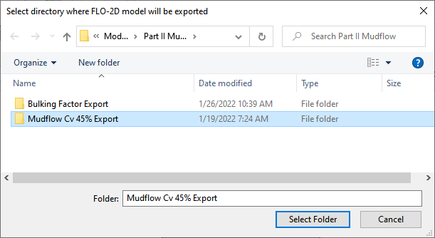
The data is ready to run.
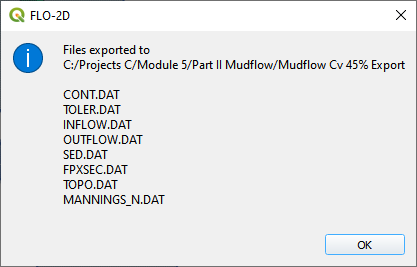
Correct the paths and click OK to start the simulation.
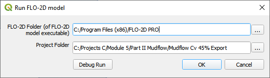